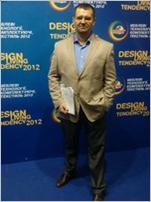

Древицкий Всеволод Витальевич
Региональный директор представительства
Дата рождения:
8 сентября 1974 (43 года)

Город: Мариуполь
Готов к переезду: Киев
Телефон: 096-011-91-60, 050- 422-77-23
Эл. почта: iq180@ukr.net
Ключевые компетенции:
Опыт работы в продажах - 20 лет
Активные продажи, Развитие дистрибуции, B2B Продажи
Опыт управления персоналом - 16 лет
Организаторские навыки, Обучение команды продаж, Управление командой
Опыт организации бизнеса с нуля
Управление проектами, Ведение переговоров, Организация выставок
Опыт в управлении финансовыми потоками - 20 лет
Оптимизация денежного оборота и расходов, Обеспечение рентабельности
Уверенное владение ПК - 17 лет
Exсel, Word, 1 С, PRO100, Photoshop , Corel Draw